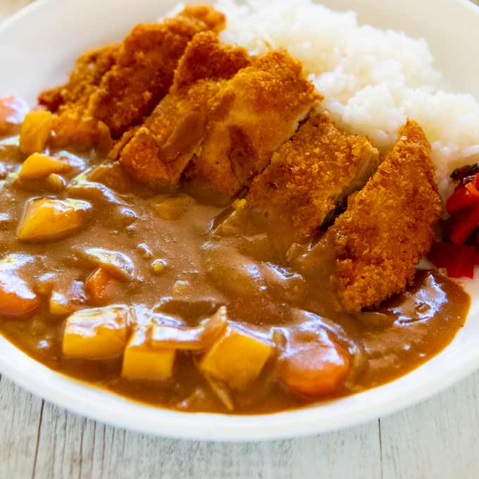

Japanese Curry Recipe

Description
This is a flavorful Japanese curry recipe that you can make at home.
Ingredients
- 1 pound chicken, beef, or pork, cut into bite-sized pieces
- 2 tablespoons vegetable oil
- 1 onion, chopped
- 2 carrots, sliced
- 2 potatoes, peeled and cubed
- 4 cups water
- 1 package Japanese curry roux (available in Asian grocery stores)
- Cooked rice, for serving
Instructions
- Heat vegetable oil in a large pot over medium heat. Add the meat and cook until browned on all sides. Remove the meat from the pot and set aside.
- In the same pot, add the chopped onion and cook until softened. Add the carrots and potatoes, and cook for a few more minutes.
- Return the meat to the pot and add water. Bring to a boil, then reduce heat and simmer for about 15 minutes, or until the vegetables are tender.
- Break the curry roux into pieces and add it to the pot. Stir until the roux is completely dissolved and the sauce thickens. Simmer for an additional 5-10 minutes, stirring occasionally.
Serve the Japanese curry over cooked rice. Enjoy!
Back to Home